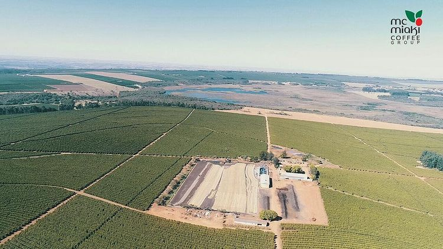

Porta do Céu
Estate
The heart of the group, on top of the Chapadão. Many of our pulped natural lots come from here.
- Fazenda Chapadão de Ferro
- Fazenda Porta do Céu
- Altitude
- 1,170 to 1,235 m
- Total area
- 465.2 ha
- Coffee area
- 333 ha
- Average yield
- 35 bags/ha
- Harvest
- 85% mechanized, 15% by hand
- Drying
- Partly on patios, partly in mechanical dryers
Processing
Natural 5%Pulped natural 70%Washed 25%
VarietiesCatuaí 99, IAC, IBC 12, Topázio, Mundo Novo and others
Rainforest Alliance · Nespresso AAA · C.A.F.E. Practices